01
Phở Thìn 13 Lò Đúc
Phở – Một thức quà đặc biệt
Có thể nói, Phở là một thức quà đặc biệt, một dấu ấn riêng khi nhắc đến ẩm thực Việt nói chung, ẩm thực Hà Nội nói riêng. Vị phở thanh đạm nhưng vẫn đảm bảo độ ngọt nước tự nhiên và dậy hương đặc trưng. Từng miếng thịt thái lát mỏng được chỉn chu chuẩn bị cho từng tô phở.
Phở Thìn 13 Lò Đúc, do ông Nguyễn Trọng Thìn sáng lập năm 1979, nổi tiếng với món phở bò tái lăn đặc trưng, khác biệt hoàn toàn với phở truyền thống. Thịt bò được xào nhanh trên lửa lớn với tỏi, tạo hương vị thơm lừng, ngậy vị dầu mỡ và nước dùng đậm đà, hành lá phủ kín mặt. Đây là thương hiệu phở lâu đời, uy tín, từng mang văn hóa ẩm thực Việt vươn tầm quốc tế.
Các đặc điểm nổi bật của Phở Thìn 13 Lò Đúc
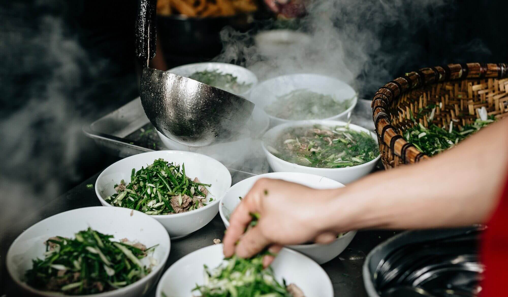
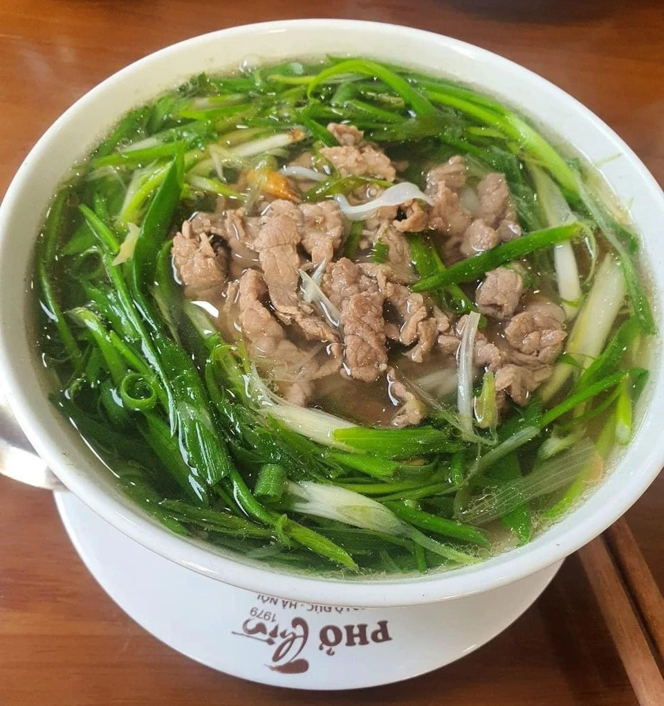
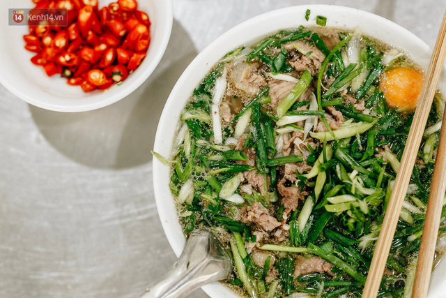
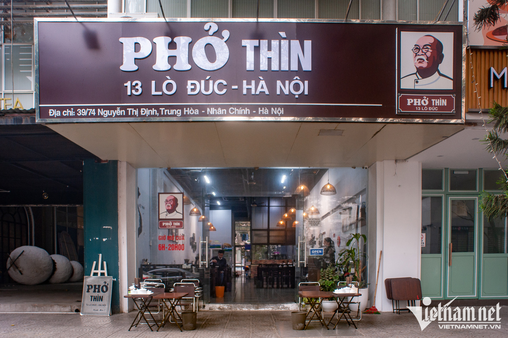
02
Cốm Làng Vòng
Thứ quà đặc biệt nhất trong mọi thứ quà Hà Nội
Cốm làng Vòng trong tác phẩm "Miếng ngon Hà Nội" được coi là một thứ quà đặc biệt nhất trong mọi thứ quà Hà Nội. Chính vì vậy mà bất kỳ ai đặt chân đến thủ đô đều muốn thưởng thức và mua về làm quà tặng biếu người thân, gia đình, bạn bè và đối tác.
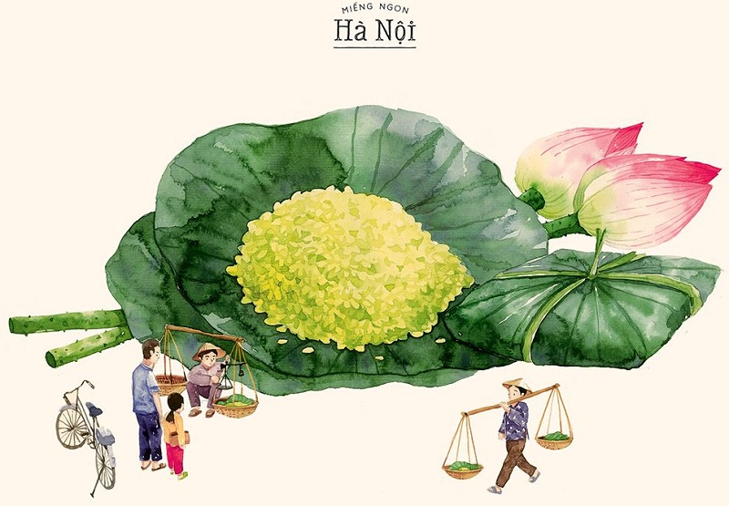
Từ xa xưa, cốm làng Vòng vốn đã nổi tiếng với câu ca dao:
"Cốm Vòng, gạo tám Mễ Trì
Tương bần, húng Láng còn gì ngon hơn!"
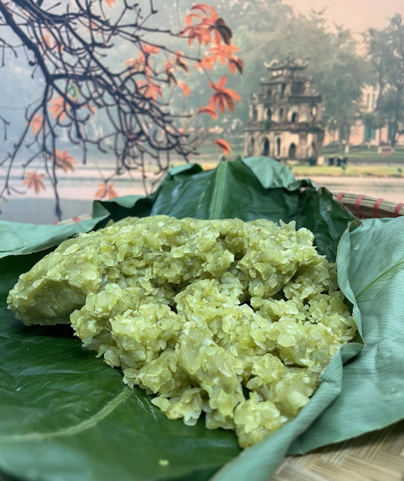
Làng cốm Vòng: Cái tên làng Vòng bắt nguồn từ địa thế của làng là nằm gọn trong một hình tròn bao quanh là một con đường, nghĩa là đi vòng quanh làng theo một con đường. Bên ngoài vòng tròn là thuộc làng khác.
Theo thời gian, cốm Vòng nổi tiếng khắp gần xa, được nâng niu, trân trọng, được đóng thành những gói quà tao nhã gửi đến người thân, người sành ăn, rồi trở thành đặc sản tiến vua các triều Lý (1009 – 1225). Giờ đây, cốm làng Vòng là món quà đặc sản mà người Hà Nội rất tâm đắc và hãnh diện.
Cốm thường được gói trong hai lớp lá: lớp trong cùng lá ráy tươi để giữ cốm không bị khô, còn ngoài cùng lá sen để bảo quản và đồng thời làm cốm có mùi thoang thoảng hương thơm của sen tươi. Buộc bằng sợi rơm lúa nếp vàng tươi khiến cốm càng trở nên mộc mạc đậm vị đồng quê.
Cốm làng Vòng là món ngon Hà Nội được mọi người thưởng thức quanh năm nhưng nhiều nhất là vào mùa thu. Nhiều người nói Hà Nội đẹp nhất mùa thu, thu về se lạnh đi giữa ngoài đường nhìn những gánh cốm vỉa hè, mùa sấu chín, mặt đường đầy lá vàng rơi, không gian thật bình yên nhẹ nhàng.
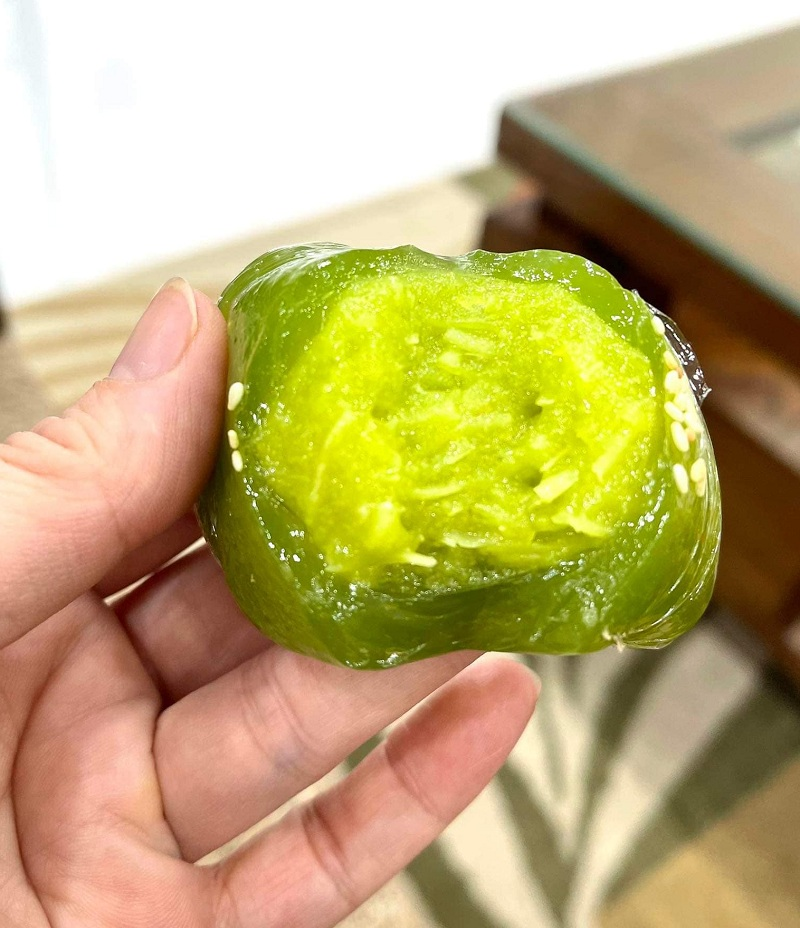
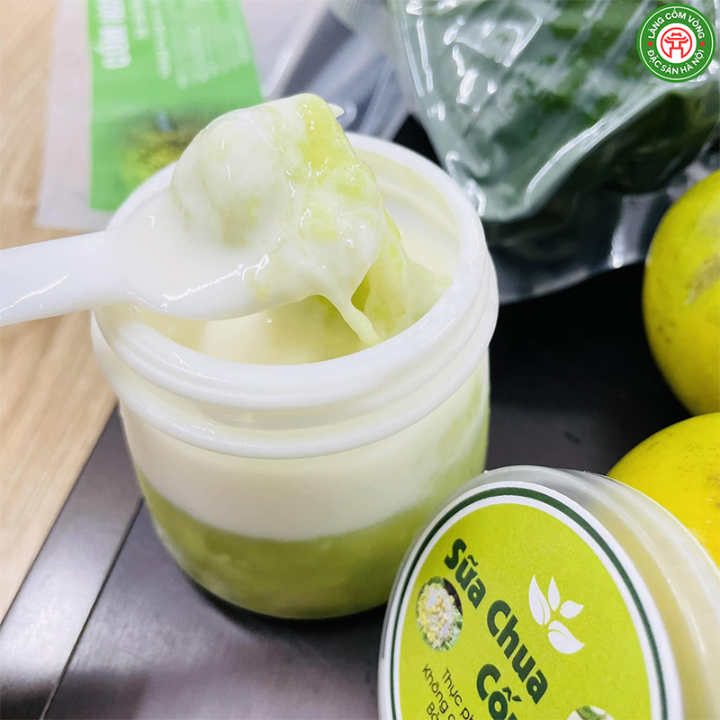
03
Cafe Giảng
Chất Hà Nội nguyên bản trong từng ngụm cà phê trứng
Cà Phê Giảng ra đời vào năm 1946, thời điểm mà Hà Nội vẫn đang trong thời kỳ kháng chiến chống Pháp. Cụ Nguyễn Văn Giảng, người sáng lập quán, từng là nhân viên pha chế tại khách sạn Metropole – một trong những khách sạn sang trọng nhất Đông Dương lúc bấy giờ.
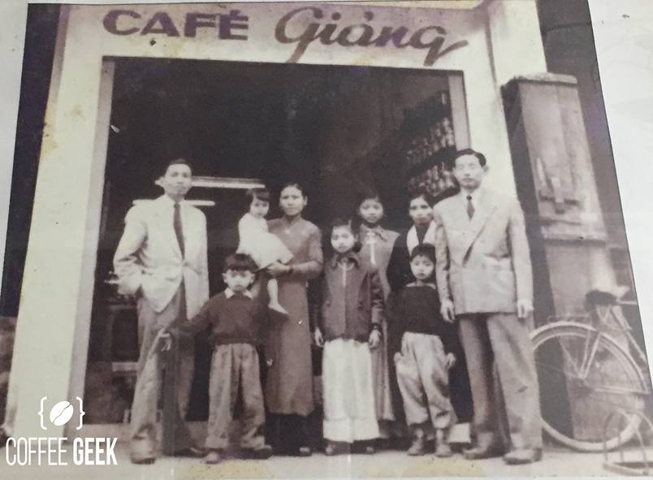
Trong bối cảnh khan hiếm nguyên liệu như sữa tươi, cụ Giảng đã sáng tạo ra công thức sử dụng lòng đỏ trứng gà đánh bông với đường và sữa đặc, sau đó rót lên trên lớp cà phê nóng, tạo nên một thức uống béo ngậy, thơm ngon và độc đáo. Món cà phê trứng ấy nhanh chóng trở thành biểu tượng của Hà Nội, thu hút cả giới thượng lưu lẫn người dân bình dị.
Hiện nay, quán do thế hệ thứ ba của gia đình cụ Giảng quản lý, tiếp tục giữ gìn và phát triển thương hiệu.
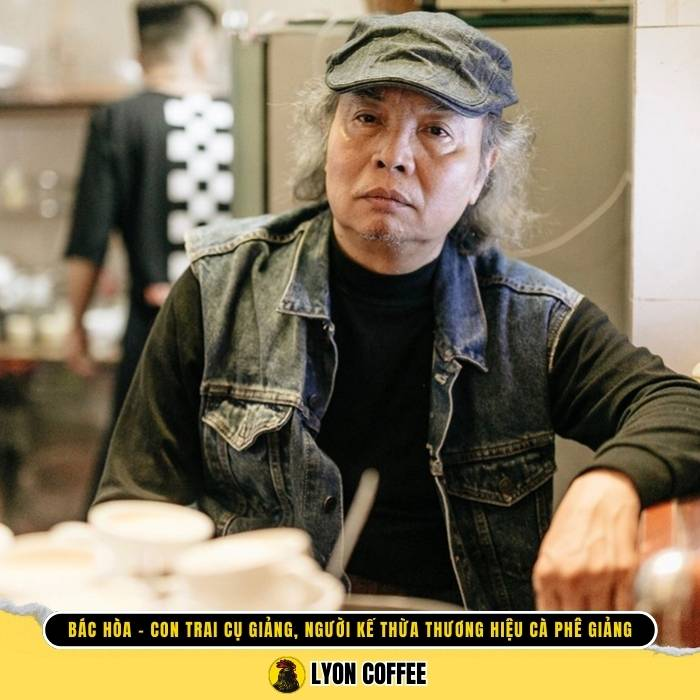
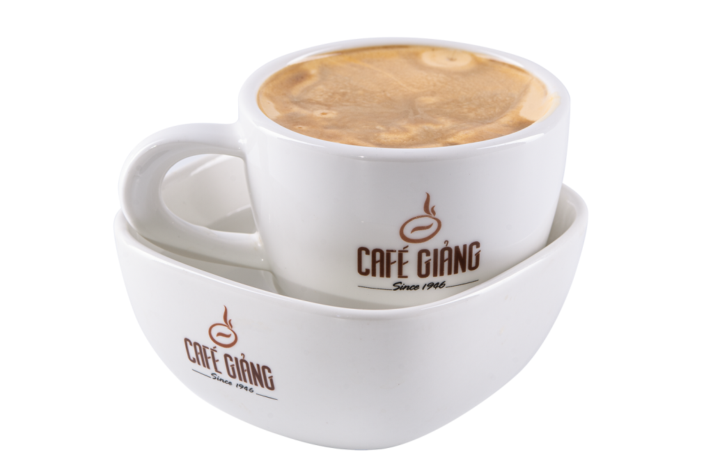
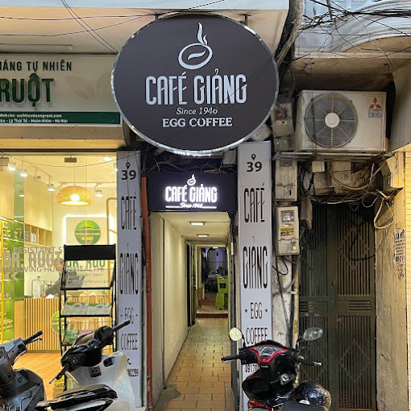
Cafe Giảng không chỉ là nơi thưởng thức cà phê trứng mà còn là mảnh ghép di sản của Hà Nội. Trong không gian cổ kính, mỗi ly cà phê đều gói trọn hơi thở lịch sử và nhịp sống thủ đô qua nhiều thế hệ, tạo nên một trải nghiệm hoài cổ khó quên.